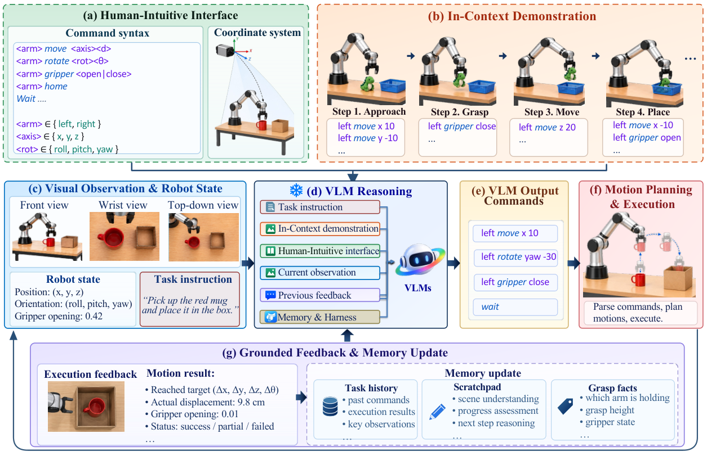
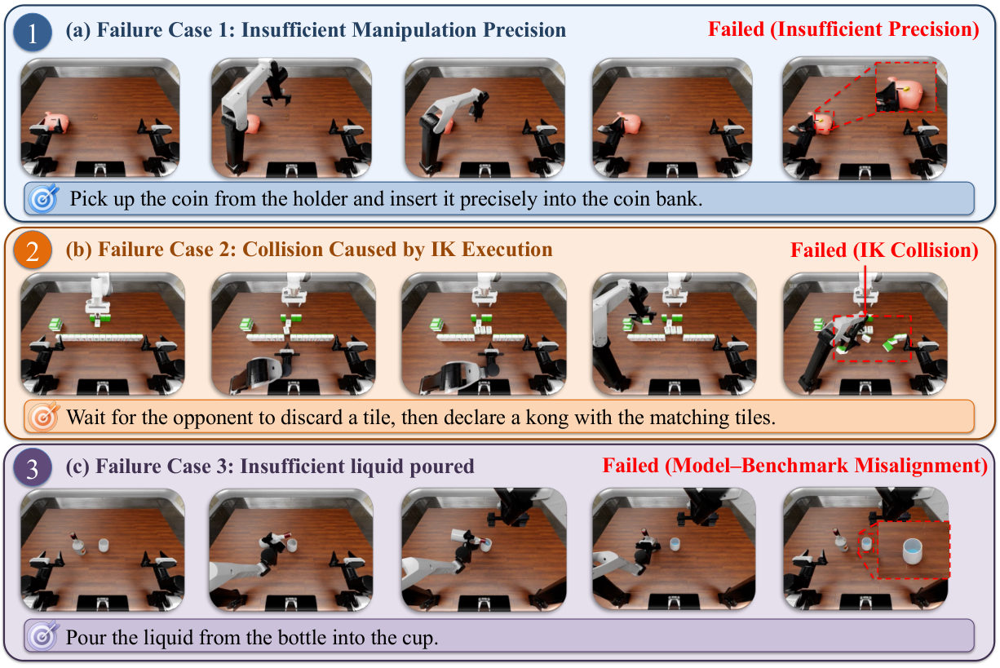

Transferring the Intelligence of VLMs to Robotic Control
Transferring the Intelligence of VLMs to Robotic Control
RoboDawn 的核心结果是：不更新 VLM 权重，把动作表达、执行反馈和示范整理成模型能读懂的接口，也能获得相当强的机器人操作能力。 值得记住四点：
- 真正起桥梁作用的是围绕夹爪交互点的动作接口，以及规划器执行后的闭环反馈。
- One-shot 是一条带状态、动作、效果和事后解释的完整任务轨迹；zero-shot 仍有通用动作示范。
- 主实验支持同任务从干净场景到随机化场景的迁移，以及任务示范的明显收益；尚未隔离“理解接口”和“借用解题策略”各自的贡献。
- 成功率收益伴随慢速决策，精细接触、执行碰撞和完成判断仍是不同的瓶颈。
1. 背景信息
- 作者与机构：Meng-Hao Guo 等，清华大学；Yongming Rao 来自腾讯混元。
- 版本：arXiv:2609.22966v1，2026-09-19，Technical Report；本文按该版本阅读。
- 原文：官方 HTML · PDF · 项目页。正文 §1–6、Table 1–5、Figure 1–4；该版无附录。
2. 关键问题：知道该做什么，怎样变成机器人能执行的动作？
沿用 Figure 2 的示意任务：把红色杯子放进盒子。VLM 可能知道“接近—抓住—移动—松开”，但这还没有回答：图中的左右对应哪个坐标轴？移动多少？旋转夹爪时绕腕部还是绕夹持点？机械臂真的移动到了指定位置吗？这些接口歧义会直接变成抓空、撞物或错位。
这里的杯子案例是论文的流程示意图，不是带成功率的单次实测轨迹。其作用是解释，从视觉语义到可执行控制，中间必须补上什么。
作者选择冻结通用 VLM，让它通过少量语义动作闭环控制机器人。与调用 pick(cup) 这类完整抓取技能相比，这里的模型仍需自己组合平移、旋转、夹爪开合；与直接生成关节控制相比，底层轨迹规划和控制则被接口封装。最近的并行工作 Show-Harness 也采用紧凑语义动作接口，作者将本文的重点放在与接口一致的 ICL 示范设计上（§2.3），因此不能把“VLM + 机器人工具”本身当作唯一创新。
3. 关键方法：统一交互点，再让模型在可执行动作空间里看示范、收反馈

Figure 2，来源：官方原图。重点看 (e)→(f)→(g)：文本命令必须经过运动规划，下一轮收到的是实际执行结果，而不只是模型自己的计划。上方示范展示的是玩具入篮，下方在线任务是红杯入盒；不能据此把跨任务 one-shot 迁移当成已量化的实验。

3.1 杯子任务如何走完一轮
输入包括任务指令、多视角标注图像、机器人状态、上一轮执行反馈和交互记忆；固定上下文还包含机器人与环境说明，以及示范。环境说明负责交代工作空间、相机、网格定位和夹爪约定（§3.1）。模型不直接读取物体的特权位姿，但它并非仅靠一张原始 RGB 图。
决定怎么动时，VLM 输出动作序列，以及进度估计、当前计划、简短 scratchpad。图中示例有 left move x 10、left rotate yaw -30 和 left gripper close，不是直接输出关节力矩。抓杯子的完整流程需要把接近、夹持、移动到盒子和释放分解成这样的动作，并在后续观察中修正；图中片段不是完整的可复现控制脚本。
执行与纠错由另一层完成：命令被转成目标位姿，规划器生成完整运动，执行至机器人静止后再观察。图中把请求位移与实际位移区分开，记忆保存过去命令、执行结果、关键观察及抓取状态。若没到位，下一轮应依据真实状态重规划，不能把“我下过抓取命令”当成“杯子已经在手里”。
3.2 GIP 解决的是“你究竟在移动哪个点”
作者将 gripper interaction point（GIP）定义为两指尖的中点，图像标注、机器人状态和动作都以它为参照（§3.2）。这避免了低层控制的腕部位姿与实际接触位置之间的偏移歧义。
| 命令 | 物理含义与约束 |
|---|---|
<arm> move <axis> <d> |
在世界坐标系沿 x/y/z 平移 GIP，保持朝向；单命令幅度截断到 20 cm |
<arm> rotate <rot> <θ> |
按世界系 roll/pitch/yaw 旋转，保持 GIP 位置；单命令幅度截断到 90° |
<arm> point <pose> |
使用 down、forward、down45 等预设朝向 |
<arm> gripper <g> |
open、close 或归一化开度 [0,1] |
<arm> home、wait、done |
复位、等待环境稳定、请求完成检查 |
旋转时保持 GIP 不动，对“已经对准杯把、还需调整夹爪方向”尤其有意义：模型不必同时推算腕部转动造成的接触点漂移。这是接口设计带来的几何简化，不是模型自行学会了低层运动学。 正文没有完整列出动作量化步长、规划器配置和碰撞处理细节，仅凭命令语法还无法复现全部执行行为。
闭环的关键关系可以压成：
$L$ 是任务，$E$ 是接口与环境说明，$D$ 是示范；图像 $I_t$、机器人状态 $x_t$、反馈 $F_{t-1}$ 和记忆 $M_t$ 随交互更新。$θ$、$E$、$D$ 在 episode 内固定（Eq. 1）。所以这里的“适应”发生在上下文和闭环行为中，没有测试时梯度更新。
3.3 One-shot 教的不只有任务答案
示范分成两部分（§3.3，Eq. 3–5）：
- 共享 command primer 展示基本命令的效果，例如旋转后夹爪变成什么样。Zero-shot 仅表示没有任务级示范，仍保留这一部分。
- 任务级示范展示如何把原语组合成完整操作；one-shot 指一整条轨迹，不是一个图像—动作对，也不是整个 benchmark 只给一条样本。
原始专家轨迹先被压缩成末端 waypoints 和夹爪状态，再转成在线模型实际可调用的语义命令。每轮保存观察、机器人状态、动作、动作的物理效果，以及短 rationale。效果来自相邻状态的 GIP 位姿和开度变化；rationale 是另一遍 VLM 事后补写的解释，不是专家当时的思考记录。
回到杯子案例，示范不仅告诉模型“抓住再移动”，还提供“这组命令在这个接口里导致了怎样的可见变化”。这使解题策略与动作语义共同进入上下文，也意味着 one-shot 的提升不能直接全部归因于其中任何一项。
长轨迹会保留完整文本，但稀疏保留抓取、旋转、完成等关键轮次的图像。原文将图像预算写作每轮上下文至多 16 observations；多视角 observation 与图像张数如何对应，正文未进一步展开。在线完整 prompt、示范补写 prompt、记忆截断策略也未完整给出，复现时需要补查实现。
4. 数据与评估：适应任务时仍然看到了机器人数据
- RoboTwin 2.0 C2R：50 个双臂任务；训练型 baseline 在每任务 50 条 clean 示范上联合后训练，共 2,500 条。RoboDawn 不更新权重，one-shot 从相应任务的 clean 集随机取一条，测试在 domain-randomized 场景，每任务 10 次独立评估（§4.1.1、Table 1）。测试场景与示范场景分开，但任务本身并非全部留出。
- RoboDojo：42 个任务，涉及泛化、记忆、长程、精度和开放能力，报告 5 次运行的平均结果。另给出排除 8 个 open tasks 的 34-task 子集，因为其他方法可能没有这些开放任务的对应训练数据（§4.1.2、Table 4）。
- 示范来源：仿真用 benchmark 脚本专家，作者称与比较策略的训练轨迹同源；真机示范可来自人工遥操作。下文 Table 5 的真机实测是 zero-shot，不能把其结果写成真机 one-shot 增益。
因此，“无任务特定参数训练”成立；“完全不使用机器人经验”不成立。冻结模型本身的预训练数据也没有在本文中被审计。
5. 关键证据：一条任务示范很有用，但收益与成本要分开看
5.1 主实验支持什么
RoboTwin C2R（Table 1，成功率 %）：
| 方法 | 使用 benchmark 示范的方式 | 成功率 |
|---|---|---|
| π0.5 | Full Set 后训练 | 46.0 |
| LingBot-VLA | Full Set 后训练 | 50.4 |
| HarnessVLA（Claude Code） | 以经训练的 LingBot-VLA 为执行策略 | 58.4 |
| RoboDawn，Gemini-3.8-Flash | 0 / 1 条任务示范，上下文内适应 | 47.0 / 62.2 |
| RoboDawn，GPT-6 Astra | 0 / 1 条任务示范，上下文内适应 | 53.2 / 73.6 |
GPT-6 Astra 的 one-shot 比自身 zero-shot 高 20.4 个百分点，比表中最强 HarnessVLA 高 15.2 个百分点。Zero-shot 超过部分训练型策略，但没有超过 HarnessVLA。证据支持此系统在 clean-to-randomized 协议中的表现，不能用它推出 VLM 在所有机器人任务上都优于 VLA，也不能把不同基座、接口与推理预算间的差异全部归因于“冻结而不训练”。
RoboDojo（Table 4）： GPT-6 Astra 版本在全 42 任务上，zero/one-shot 成功率为 35.67% / 47.17%，进度分为 39.92 / 54.63；DM0.5 为 19.34% / 24.90 分。表中另一个 GPT-6 Astra 零样本 baseline 为 22.58% / 28.97 分，说明强基座本身并不能自动达到 RoboDawn 的结果，但整套接口差异仍未被隔离。
排除 open tasks 后，RoboDawn 的 34-task 成功率是 33.96% / 43.33%。这说明收益不只存在于全任务口径；不过表中没有为其他方法重列相同 34-task 分母，不能直接拿这两列算严格匹配的领先幅度。主表未报告置信区间，也没有展开随机选择示范带来的波动。
5.2 消融表明空间接口与推理都重要，未证明 ICL 的具体学习机制
Table 3(c) 固定 Gemini-3.8-Flash、zero-shot：完整系统 47.0%，去 reasoning 为 34.8%，去定位网格为 32.4%，去 primer 为 44.0%。网格的影响最大，提示可读的空间参照是关键条件；这不是只给 VLM 加一句“仔细思考”就能复现的系统。另一方面，这些是系统部件移除实验，不能当成模型内部推理忠实性的证明。
Table 3(a) 的 0/1/2/4/8-shot 为 47.0/62.2/63.6/65.4/62.7%：首条示范贡献最大，继续堆上下文不保证继续改善。作者将 8-shot 回落解释为长上下文干扰，但没有控制示范质量、抽样及图像选择来验证这一归因。正文把 shot 消融指向 3(c)，此处按实际表格的 3(a) 记录。
同样的 one-shot 接口下，GPT-5.6-Luna、GPT-5.6-Sol、Gemini-3.8-Flash、GPT-6 Astra 分别为 14.4%、43.2%、62.2%、73.6%（Table 3(b)）。它表明基座选择对系统结果影响很大；没有匹配推理预算，不能据此单独测得某一种“具身能力”的 scaling law。
5.3 更多交互机会能提高成功率，但不是免费的推理扩展
Figure 3 将 RoboDojo 每 episode 命令预算从 60 增至 240：one-shot 从 31.2% 到 47.2%，zero-shot 从 23.7% 到 35.7%。作者归因于失败恢复和记忆。这里同时增加了实际动作、观察和重试机会；没有“固定动作数、只增加思考量”或去记忆对照，故应称为交互预算扩展，而非纯语言推理算力带来的因果收益。
Table 2 的延迟测试改用 Seed-2.1-Pro，覆盖 RoboTwin 的 50 个任务：平均推理 9.74 s，输出 3.4 条命令，运动执行 2.09 s，推理/运动时间比 4.65。π0.5 对应推理 101 ms、运动 2.70 s、比例 0.037。动作命令与策略 action steps 的粒度不同，不能用数量直接比较效率；更不能把该延迟与 GPT-6 Astra 的最佳成功率拼成同一配置。论文也没有给出足够的完整 episode 墙钟时间和费用来判断部署吞吐。
5.4 真机与失败案例限定了外推范围
Table 5 使用 Gemini-3.8-Flash，zero-shot：Franka 方块入篮 9/10，堆叠 5/10，Piper 叠布 0/10。它提供了从仿真走到物理机器人的可行性证据，但任务少、每项仅十次，也没有真机 baseline。作者认为旋转理解不足可能拖累叠布，这仍是解释假设，没有专门对照。

Figure 4，来源：官方原图。三行应分别看：硬币插槽对准失败、麻将操作中 IK 执行碰撞、倒水不足却提前结束。它们说明“高层动作意图正确”还不足以完成任务；这些是代表案例，不是失败类型的频率统计。

6. Insights：下一步应当隔离什么？
1. 先拆开“学会接口”和“得到任务策略”，才能谈智能迁移的机制。 共享 primer 的消融影响小于完整任务示范的增益，但二者既不等长，也不提供相同信息。我会比较同任务完整示范、异任务但原语覆盖匹配的示范、仅动作效果、仅任务步骤，并控制 token 与图像预算。若异任务示范也保留大部分提升，才更支持主要瓶颈是动作语义对齐；否则收益可能更多来自具体解题路径。
2. 最可迁移的工程经验是把“计划状态”和“物理状态”分开。 GIP 对齐让命令有一致含义，执行反馈让记忆有实际依据；但 Figure 4 又显示，能到目标位姿不代表路径不碰撞，做过倒水动作不代表倒够了。复现时应分别记录命令是否实现、过程是否碰撞、终态是否满足任务，而不要合成一个模糊的 success。可进一步固定命令序列替换执行器，区分决策失误与执行层失误。
3. 合理的使用边界是低频决策与可规划操作；精细接触需要另外验证。 十秒量级推理和接触附近的失败共同提示：增强高层语义能力未必能解决最后几毫米。值得测试的组合是保留 VLM 的任务选择与纠错，在接近接触时交给局部闭环控制器，并以成功率—墙钟时间—碰撞率一起评估。本文没有验证这个混合方案，也没有证明更强 VLM 就能替代它。
7. 连接与发现
- MOC-VLA — Topic/Area：补充冻结通用 VLM 经语义动作接口进行闭环操作的路线；与训练型 VLA 的差异涉及接口、执行器及推理预算，不能仅按是否更新权重归类优劣。